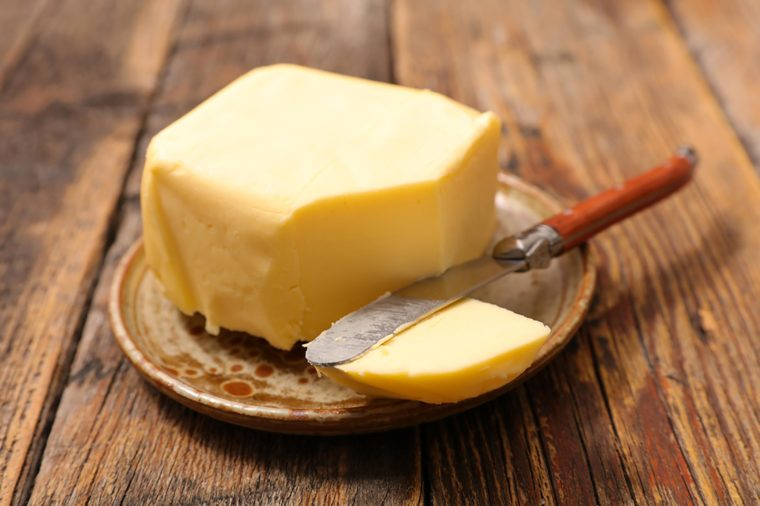
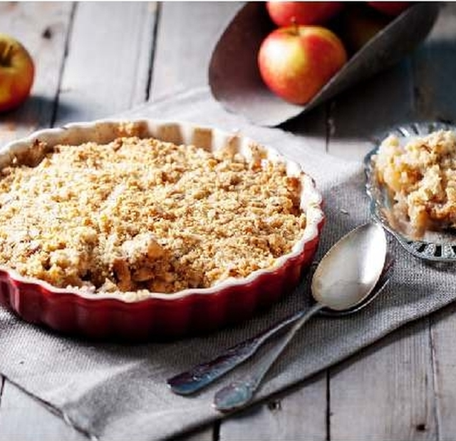

Персиковий крамбл
Інгрідієнти:
700 г персиков
120 г сливочного масла
130 г муки
100 г коричневого сахара
2 ст. л. ванильного сахара
120 г грецких орехов
1,5 ч. л. разрыхлителя
щепотка соли
сливочное масло для формы

Спосіб приготування:
Измельчите грецкие орехи в крошку. Смешайте муку, коричневый сахар, разрыхлитель и соль. Положите нарезанное кусочками масло и порубите в крошку. Добавьте грецкие орехи.
Щедро смажьте форму маслом. Разрежьте персики на 6 частей, удаляя косточки. Выложите в форму, посыпьте ванильным сахаром. Разогрейте духовку до 190 °С. Посыпьте персики тестом и поставьте в духовку на 30 мин.
Крамбл готовий!
